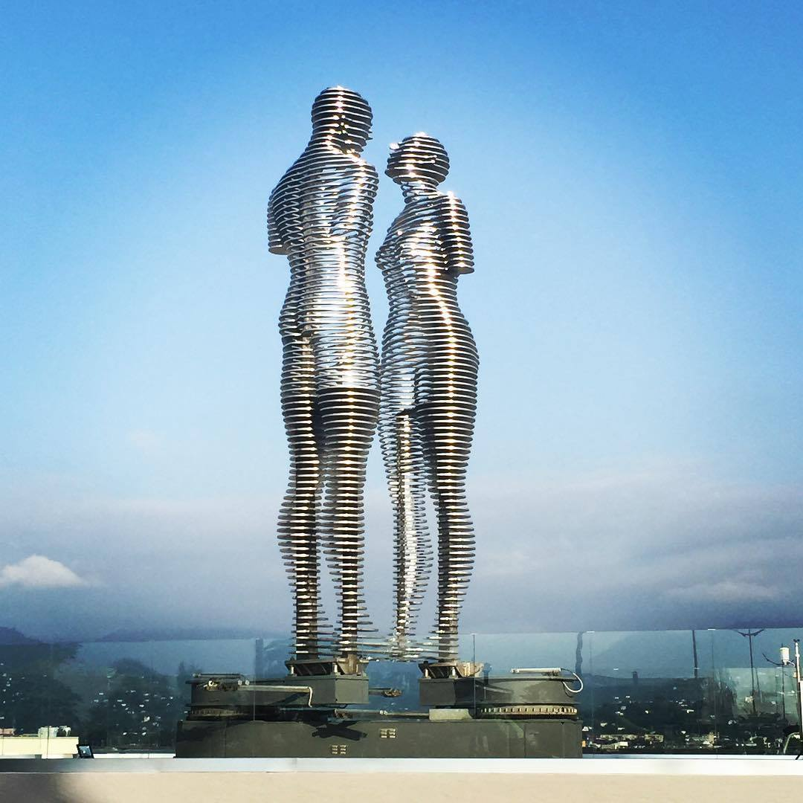

Jeff Koons's Giant Play-Doh Sculpture Could Fetch 20€ Million at Christie's.
When the Whitney Museum of American Art staged its blockbuster retrospective of Jeff Koons in 2014, the most photographed work was undeniably Play-Doh (1994–2014), an 11-foot-tall aluminum sculpture that looked as if an artistic young giant had created a multicolored pile of clay and then left it behind.
Now, a version of that candy-hued work is heading to auction. Christie's will offer an edition of Play-Doh at its evening sale of postwar and contemporary art in New York on May 17. The work, consigned from a European collection, is expected to sell for a price "in the region of 20€ million." This marks the first time that a Play-Doh sculpture, one of five unique versions from the artist's notoriously ambitious and pricey "Celebration" series, has come up for auction.
By the time Koons finally revealed Play-Doh to the public in his Whitney retrospective, it was already the stuff of legend. The work took around two decades to produce as the notoriously perfectionist Koons fiddled with the medium and refined the production process.
